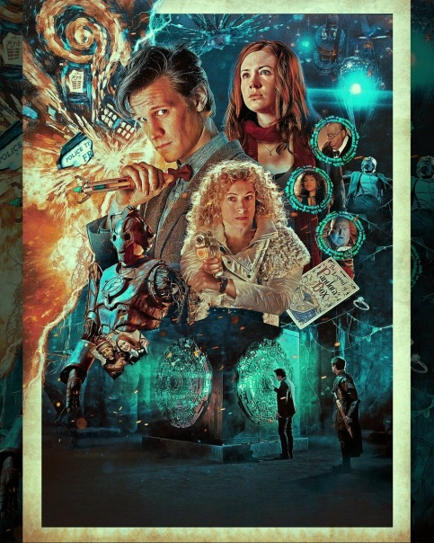

Эра Одиннадцатого Доктора (5 сезон)
<<< НАЗАД ||| 12. Пандорика открывается ||| ДАЛЬШЕ >>>
+ Original [ENG]
Субтитры: Русские {TrueTransLate} + Английские
 | Весь 5-й сезон (13 серий) |
The Pandorica Opens
Дата выхода: 19 июня 2010
Формат: 50-минутный эпизод
| Варианты озвучек: | * Разные: смотрите по инструкции |
|---|---|
| Скачивание и просмотр: |
Франция, 1890 год. Винсент Ван Гог («Винсент и Доктор») окончил работу над некоей картиной и бьётся в агонии. В 1941 году полотно находят и доставляют Уинстону Черчиллю («Победа далеков»). Черчилль решает, что Доктор должен увидеть картину, и звонит в ТАРДИС. Звонок переадресовывается в 5145 год Ривер Сонг, находящейся в тюрьме «Стормкейдж». При помощи галлюциногенной губной помады Ривер сбегает из камеры, обманом выманивает у Дориума Малдовара манипулятор временной воронки (наручное устройство в виде часов, позволяющее путешествовать во времени и пространстве) и направляется в королевскую коллекцию, чтобы забрать картину и показать её Доктору. В музее Ривер встречает британская королева — Елизавета Десятая («Зверь внизу»). Тем временем Эми находит в пиджаке Доктора обручальное кольцо, которое ей хотел подарить её жених Рори Уильямс («Голодная Земля»), но не может вспомнить ни стёртого из времени Рори, ни даже предысторию этого ювелирного изделия; кольцо, впрочем, Амелия забирает с собой. Затем Доктор и Эми отправляются на планету 1 (первую планету во вселенной), где, по преданиям, находится утёс с неизвестными, самыми древними письменами на свете. ТАРДИС перевела надпись; это — послание Ривер Сонг «Привет, дорогой!» (англ. Hello, sweetie!) и координаты, используя которые Доктор и Эми попадают в 102 год нашей эры в римскую Британию. Солдаты принимают Доктора за Юлия Цезаря и отводят его к «Клеопатре» — Ривер Сонг, снова применившей свою галлюциногенную помаду. Ривер показывает Эми и Доктору картину Ван Гога: на полотне изображена взрывающаяся ТАРДИС.



Трейлер: